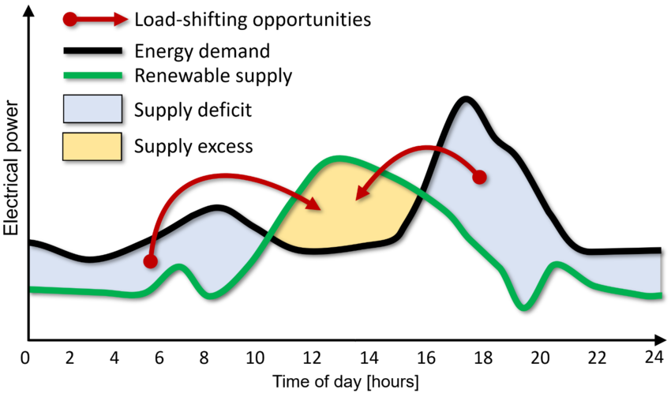

Limits and Intro to Derivatives
Bren Calculus Workshop
Carmen Galaz García, Ph.D.
Bren School of Environmental Science & Management
Last updated: Sep 18, 2025
Materials have been adapted from Nathaniel Grimes work for the Bren Calculus Workshop.
Functions are like baking recipes
- Assemble all your ingredients.
In a function, these are the independent variables like \(x\).
- Follow the instructions to mix, bake, and decorate
These are the mathematical instructions in the function about how to manipulate the independent variables.
- End up with final product!
This is the ouput \(f(x)\) or dependent variable.
Typically we use the notation \(f(x)=x\), but we can always use different representations like \(g(x)=x\) or \(y=x\).
What is a function?
For each combination of independent variables, there is exactly one (and only one) value of the dependent variable.
Vertical line test
If you run a vertical line perpendicular to the \(x\)-axis and see where it intersects the graph of a function, then it should only intersect it once at every value of \(x\).
ü§î Are these functions?
Continuity
Intuitively, a function is continuous if there are no ‘breaks’ in the graph of the function. This means you are able to draw the whole graph without lifting your pencil.
To define it formally we need to understand limits.
A function is discontinuous if it’s not continuous! So there are ‘breaks’ or ‘gaps’ in its graph.
Limits
Definition
We say a number \(L\) is the limit of a function \(f(x)\) as its variable \(x\) approaches a number \(c\), if the function’s output values \(f(x)\) approach \(L\) when \(x\) get closer to \(c\).
We write this symbolically as:
\[
\large
\lim_{x\to c} f(x)=L
\]
We read this as: “The limit of \(f(x)\) as \(x\) approaches \(c\) is \(L\).”
Example: numerical
What is the limit of \(f(x)=2x^2-4\) as \(x\) approaches 2?
We need to examine the values of \(f(x)\) as \(x\) gets closer to 2 from both sides.
From both directions it looks like \(f(x)\) converges to 4.
So, we say that “The limit of \(2x^2-4\) as \(x\) approaches 2 is 4” and we can write it like this:
\[
\lim_{x\to 2}(2x^2-4)=4
\]
Example: graph
What is the limit of \(f(x)=2x^2-4\) as \(x\) approaches 2?

From both directions it looks like \(f(x)\) converges to 4.
So, \(\lim_{x\to 2}(2x^2-4)=4\).
Continuity revisited
A function \(f(x)\) is continuous at \(x=c\) if
\[
\lim_{x\to c}f(x)=f(c).
\]
So, if a function is continuous, we just need to evaluate the function to obtain the limit.
Example
\(f(x) = 2x^2-4\) is a continuous function. So we can obtain the limit as \(x\to 2\) by evaluating the function
\[\lim_{x\to 2}(2x^2-4)= f(2) = 4.\]
Limit at a discontinuity
- Discontinuous functions can still have limits at a discontinuity.
Example
Let \[
f(x) = x+1 , \text{ if x $\neq$ 2}
\]
✏️ Draw a graph of \(f(x)\). Then try calculating \(\lim_{x\to 2} f(x)\).
The value \(f(2)\) may not exist, but we can still find a limit because \(f(x)\) consistently approaches 3 from both directions as \(x\to 2\).
No limit at a discontinuity
- But other times discontinuous functions don’t have a limit at a discontinuity.
Example
The function \(|x|\) is the absolute value function. It is such that
\[
|x| =
\begin{cases}
x, & \text{ if } x\geq 0 \\
-x, & \text{ if } x <0
\end{cases}
.
\]
✏️ Is the function \(f(x) = \frac{|x-2|}{x-2}\) continuous at \(x=2\)?
✏️ Try calculating: \[
\lim_{x\to 2}\frac{|x-2|}{x-2}.
\]
Hint: Try to do numerical approximations or draw the graph of this function.
No limit at a discontinuity
Is the function \(f(x) = \frac{|x-2|}{x-2}\) continuous at \(x=2\)?
This function is not even defined at \(x=2\) since it would require us to divide by zero, which is undefined.
Try calculating \(\lim_{x\to 2}\frac{|x-2|}{x-2}\).
Let’s investigate:
No limit at a discontinuity
The function \(\frac{|x-2|}{x-2}\) approaches different values from either side at \(x=2\).
Therefore… the limit does not exist!
Side limits
Though the function \(f(x) = \frac{|x-2|}{x-2}\) had no limit at \(x=2\), it clearly was approaching certain values when we considered only values of \(x\) from one side or the other:
In this case we say that
\[
\lim_{x\to 2^-} f(x) = -1
\]
The limit of \(f(x)\) as \(x\) approaches 2 from the left is -1.
Notice the small - subscript on the 2.
\[
\lim_{x\to 2^+} f(x) = 1
\]
The limit of \(f(x)\) as \(x\) approaches 2 from the right is 1.
Notice the small + subscript on the 2.
Task 1: Match the graphs (a,b,c) with the limits (1,2,3).
\[
\lim_{x\to-4}g(x)=3
\]
\[
\lim_{x\to 3} g(x)= \text{DNE}
\]
2) Can you think of examples where discontinuous functions might exist in environmental science?
3) As a team, draw graphs to exemplify two of these statements:
\(\lim_{x\to 4^-} f(x)\) and \(\lim_{x\to 4^+}f(x)\) are both infinite
\(\lim_{x\to 3} f(x)=2\), but \(f(3)=0\)
\(\lim_{x\to 5^-} f(x)=4\) and \(\lim_{x\to 5^+} f(x)=2\)
\(\lim_{x\to -3} f(x)=-5\) but \(f(-3)=-5\)
Introduction to Derivatives
Putting it all together
Recall average rate of change and instantaneous
Taking the average rate of change to a set limit will eventually converge to the instantaneous.
Average slope
Start with:
Nearby point:
Average slope:
Average slope
Start with a point \((x,f(x))\) on the graph.
A nearby point can be \((x+\Delta x, f(x+\Delta x))\), where \(\Delta x\) is a short distance from \(x\).
The average slope between \((x,f(x))\) and \((x+\Delta x, f(x+\Delta x))\) is given by
\[\text{average slope} = \frac{f(x+\Delta x) - f(x)}{(x+\Delta x)-x} = \frac{f(x+\Delta x) - f(x)}{\Delta x}.\]
What happens when \(\Delta x\) becomes smaller and smaller?
What happens when \(\Delta x \to 0\)?
What happens when \(\Delta x \to 0\)?
What happens when \(\Delta x \to 0\)?
What happens when \(\Delta x \to 0\)?
Tangent lines
What if we let \(\Delta x=0\)?
Then we would have a slope line that only touches our function at exactly \(x\).
These very special types of lines are called tangent lines.
Derivative definition
Remember the slope of the line that passes between two points \((x_1, y_1)\) and \((x_2, y_2)\) is:
\[\text{slope}=\frac{y_2-y_1}{x_2-x_1}.\]
If we have a function \(f(x)\), then \((x,f(x))\) represents a point on its graph.
Choose a different point on the graph that is \(\Delta x\) away: \((x+\Delta x,f(x+\Delta x))\).
Plug these pointson the graph of \(f(x)\) into the slope equation:
\[
\text{slope}=\frac{f(x+\Delta x)-f(x)}{\Delta x}.
\]
When we let \(\Delta x \to 0\) we get the slope of the tangent line at \(x\)
\[
\large
f'(x)=\lim_{\Delta x \to 0} \frac{f(x+\Delta x)-f(x)}{\Delta x}
\]
This is the derivative of \(f\) at \(x\). Also denoted \(\frac{df}{dx}\).
Not all functions are differentiable
- All differentiable functions are continuous, but not all continuous functions are differentiable.
- The absolute value function \(|x|\) is one example, this is defined by \[|x| =
\begin{cases}
x &, x \geq 0\\
-x &, x<0
\end{cases}.\]
It’s graph is:
Calculus and derivatives are used to study change
Environmental Science studies change

Environmental Science studies change

Environmental Science studies change

Rules for differentiation (1)
Constant Rule
Power Rule
Rules for differentiation (1)
Constant Rule
Let \(c\) be a constant (so, a number). If \(f(x) = c\), then \(f'(x)=0\). Equivalently
\[\frac{d}{dx}c = 0\]
Power Rule
Let \(n\) be a (real) number, if \(f(x)= x^n\), then \(f'(x) = nx^{n-1}\). Equivalently \[
\frac{d}{dx}[x^n]
=nx^{n-1}.
\]
Examples
\[
\begin{align}
&y=100 & &f(x)=x^5 & &f(x)=\frac{1}{x^2}
\end{align}
\]
Rules for differentiation (2)
Sum and Difference Rules
Rules for differentiation (2)
Sum and Difference Rules
Let \(f(x)\) and \(g(x)\) be differentiable functions. Then \[
\begin{align}
\frac{d}{dx}[f(x)+g(x)]=\frac{d}{dx}f(x)+\frac{d}{dx}g(x) \\
\frac{d}{dx}[f(x)-g(x)]=\frac{d}{dx}f(x)-\frac{d}{dx}g(x)
\end{align}
\]
üòµAll this says is: if the function has pieces that are added or subtracted you can take the derivative of each individual piece and add those derivatives.
Example
\[
f(x)=x^3-x^2-15
\]
Rules for differentiation (3)
Constant Multiplier Rule
Rules for differentiation (3)
Constant Multiplier Rule
The derivative of a constant \(c\) multiplied by a function \(f(x)\) is the same as the constant multiplied by the derivative:
\[\frac{d}{dx}[kf(x)] = k\frac{d}{dx}f(x)\]
Example
\[
y=x^2+\sqrt{2}x-\frac{8}{x}+4
\]
Summary of differentiation rules
| Constant Rule |
\(f(x)=c \Rightarrow f'(x)=0\) |
\(\frac{d}{dx}[c]=0\) |
| Power Rule |
\(f(x)=x^n \Rightarrow f'(x)=n x^{n-1}\) |
\(\frac{d}{dx}[x^n]=n x^{n-1}\) |
| Sum Rule |
\((g(x)+h(x))'=g'(x)+h'(x)\) |
\(\frac{d}{dx}[g(x)+h(x)]=\frac{d}{dx}g(x)+\frac{d}{dx}h(x)\) |
| Difference Rule |
\((g(x)-h(x))' = g'(x)-h'(x)\) |
\(\frac{d}{dx}[g(x)-h(x)]=\frac{d}{dx}g(x)-\frac{d}{dx}h(x)\) |
| Constant Multiplier Rule |
\((c\cdot g(x))'=c\,g'(x)\) |
\(\frac{d}{dx}[c\,g(x)]=c\,\frac{d}{dx}g(x)\) |
- As a team, list 3 fields of environmental science where studying the rate of change and derivatives would be important.
- Which rules should you use to take these derivatives?
\[
\begin{align}
\text{A) }& f(x)=3x^4 &\text{B) } y=4x^2+3x-16
\end{align}
\]
- Find the derivatives of these functions
\[
\begin{align}
&\text{A) } y=3x^2 & &\text{B) }h(x)=7x+4 & &\text{C) }g(y)=\sqrt{y}
\end{align}
\]